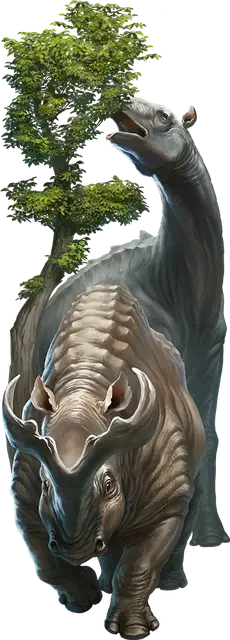

Титанотерий
Titanothere
Огромный Зверь, без мировоззрения

Класс Доспеха 16 (природный доспех)
Хиты 136 (13к12 + 52)
Скорость 50 футов
| мод | спас | ||
|---|---|---|---|
| СИЛ | 25 | +7 | +7 |
| ЛОВ | 10 | +0 | +0 |
| ТЕЛ | 19 | +4 | +4 |
| мод | спас | ||
|---|---|---|---|
| ИНТ | 2 | −4 | −4 |
| МДР | 12 | +1 | +1 |
| ХАР | 6 | −2 | −2 |
Чувства пассивное Восприятие 11
Опасность 5 (1800 опыта)
Бонус мастерства +3
Особенности
Вьючное животное. Титанотерий считается на один размер больше при определении его грузоподъемности.
Действия
Топот. . Рукопашная атака оружием: +10 к попаданию, досягаемость 10 футов, одна цель. Попадание: 20 (3к8 + 6) дробящего урона. Если перед атакой титанотерий переместится как минимум на 20 футов по прямой к цели, то цель дополнительно получает 13 (3к8) дробящего урона и должна преуспеть в спасброске Силы Сл 18, иначе упадёт ничком.
Описание
У меня сохранились приятные воспоминания о том, как я каталась по льдам на спине верного титанотерия с густой шерстью, которого я называла Мохнатым. Но это было тысячи лет назад и за много миров от нас...
- Дианкастра
Титанотерии – семейство огромных млекопитающих, относящихся к семейству носорогов. У некоторых из них отсутствуют какие-либо рога на лице, в то время как у других есть один, два или более рогов различных форм и размеров. У некоторых грубая, почти каменистая кожа, у некоторых роговые пластины, а у некоторых густой, лохматый мех. Этих существ объединяет их огромный рост, стадное поведение и раздражительный нрав.